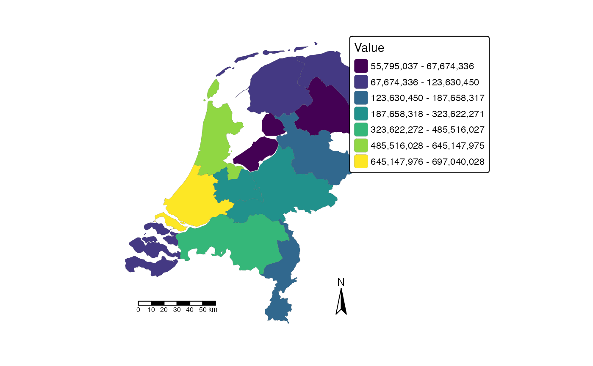

Creates a choropleth map from an `sf` object, typically produced
by points_to_polygon(). Polygons are shaded according to values in a
specified column, with clustering based on the Fisher–Jenks algorithm. This
method minimizes within-class variance and maximizes between-class variance,
making it a common choice for choropleth maps.
Usage
choropleth(
sf_object,
value = "output",
id_name = "areaname",
mode = "plot",
n = 7,
legend_title = "Clustering",
palette = "viridis"
)Arguments
- sf_object
An object of class
sf.- value
A string giving the name of the column used to shade the polygons.
- id_name
A string giving the name of the column containing polygon IDs (used for tooltips in interactive mode).
- mode
A string indicating whether to create a static map (
"plot", default) or an interactive map ("view").- n
Integer; number of clusters. Default is
7.- legend_title
A string giving the legend title.
- palette
A palette name or vector of colors. See
tmaptools::palette_explorer()for available palettes. Prefix the name with"-"to reverse the order. Default is"viridis".
Details
The function uses the Fisher–Jenks algorithm
(style = "fisher") to classify values into n groups.
Examples
test <- points_to_polygon(nl_provincie, insurance, sum(amount, na.rm = TRUE))
#> 109 points are outside any polygon.
choropleth(test)

choropleth(test, id_name = "areaname", mode = "view")